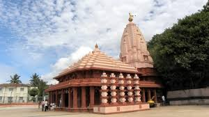
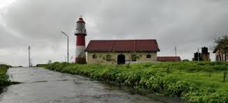
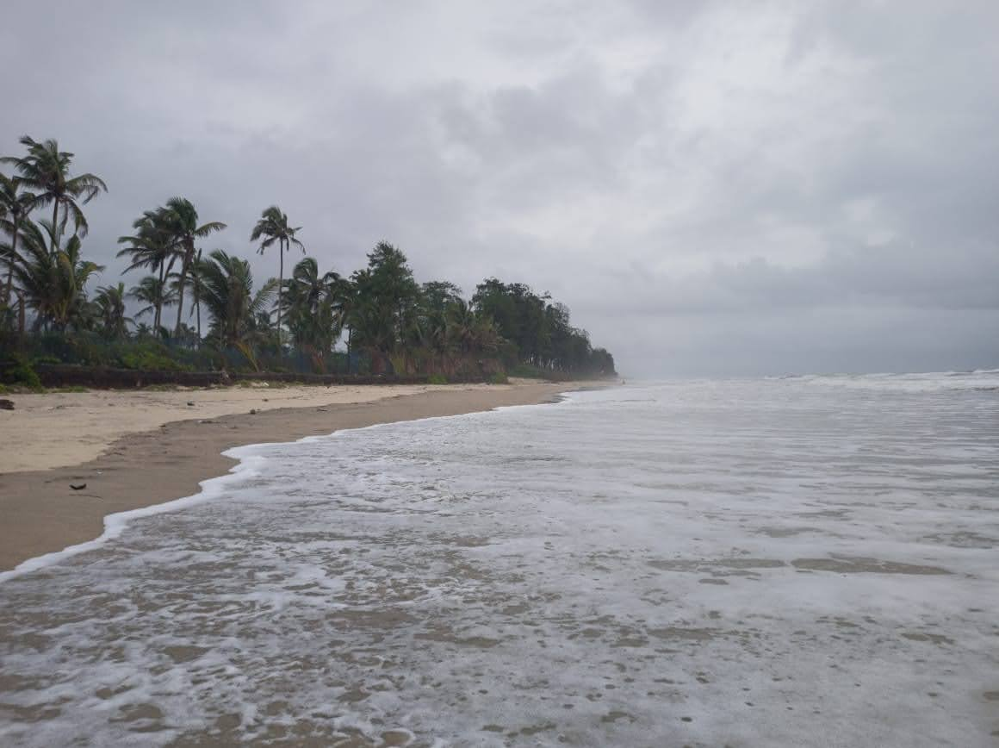
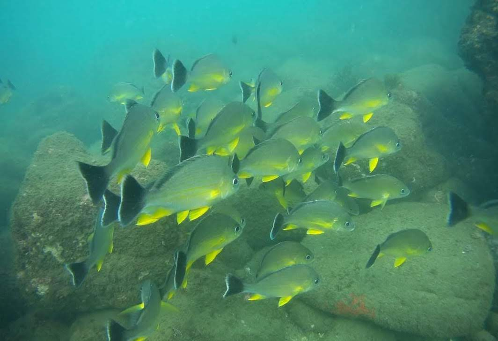

About
Ganapati Pule is known for its temple dedicated to Lord Ganesha and its white sand beach, Ganpatipule is located in the Ratnagiri district of Maharashtra. There are two schools of thought as to how the town got its name. According to folklore, Lord Ganesha, offended by a remark left Gule, his original abode, and reached Pule. Another school of thought believes that the town got its name from the white sand (or Pule in Marathi) from which the idol of Ganesha was formed. Today, the town has become a major pilgrimage center. Thousands of pilgrims visit the Swayambhu Ganpati temple, where the idol is self-manifested. The Ganesha temple in Ganpatipule is unique because it is one of the few temples in the country in which the presiding deity faces west. The 400- year-old temple is one of the prime tourist attractions of the town.
Places to visit
-
Swayambhu Ganpati Temple
A 400-year-old Ganesha temple, Swayambhu is built of pule which is nothing but white sand and is believed to be a self-created monolith of Lord Ganesha, allegedly discovered 1600 years ago. You can hear the rhythmic beats coming from the temple early in the morning and evenings when the idol is being dressed. The temple attracts a lot of visitors especially during the Hindu festival of Diwali which typically falls in the month of October or November.
 -
Jaigad Fort and Lighthouse
Jaigad Fort is a 16th-century fort that extends over an area of 13 acres in the coastal region of Maharashtra. Located near Jaigad Village and approximately 20 kms to the north-west of Ganpatipule, the remains of the fort stand steady on a cliff overlooking the Jaigad creek where River Shastri enters the vast and mesmerising Arabian Sea. Jaigad Fort is an engineering marvel for the purpose it was built. A glance at the magnificent structure before you enter will surely amaze you. A visit to the Jaigad lighthouse which was built in close vicinity to the Jaigad fort is a must. Read more
 -
Beaches and watersports
There are a lot of beaches located in Ganapati pule like the main Ganpati pule beach, Aare Waare Beach, Malgund Beach and many more beaches. Some of these beaches have great water sport activities like Scuba diving, snorkrling, Jet ski and many other fun adventure sports. The best part about these beaches is that they have not yet been commericialised and this is what makes them special. These are white sand beaches and yet they are very clean and beautiful. It is a perfect place for relaxation and enjoying peace.

Best time to visit
| Month | Min. Temp.(Celsius) | Max. Temp.(Celsius) |
|---|---|---|
| January | 19 | 33 |
| February | 19 | 33 |
| October | 24 | 32 |
| November | 19 | 33 |
| December | 19 | 33 |
Best places to stay
From my personal experience, the best place to stay at Ganapati Pule is MTDC. The service provided by the staff is nominal but the view and cleanlines maintained by them is top notch. There are various stay options avaiable with different types of rooms and cottages with an amazing beach view. It is located right outside the temple and right in the center of the town. You won't find a better accomodation at this price with the ammenities they provide and the location. It is totally worth it!

Best restaurants for local food
Mehendales Swaad Dinning
A pure-vegetarian restaurant which serves great thalis with konkani curry and many other konkani delicacies like ukadiche modak, solkadhi and many other tasty dishes. The cleanliness and hygiene is also good. If you enjoy simple home-cooked food then this is the place for you.
Sameer
This restaurant is famous for its seafood. It is one of the most popular place that serves delicious seafood items like various fish fry with coconut curry and also prawns. It is a must visit for all seafood lovers! This place also serves the best solkadhi. It is not recommended for vegetarians since it hardly serves any veg food.